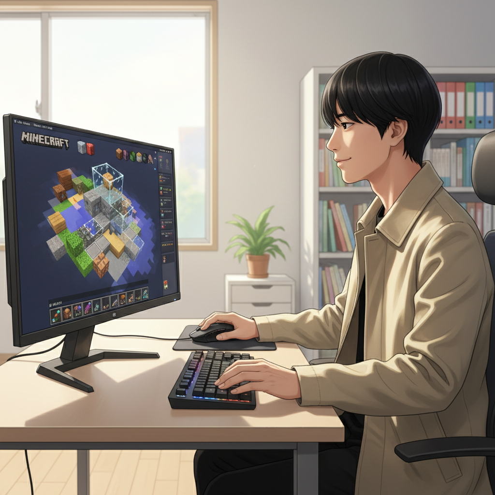
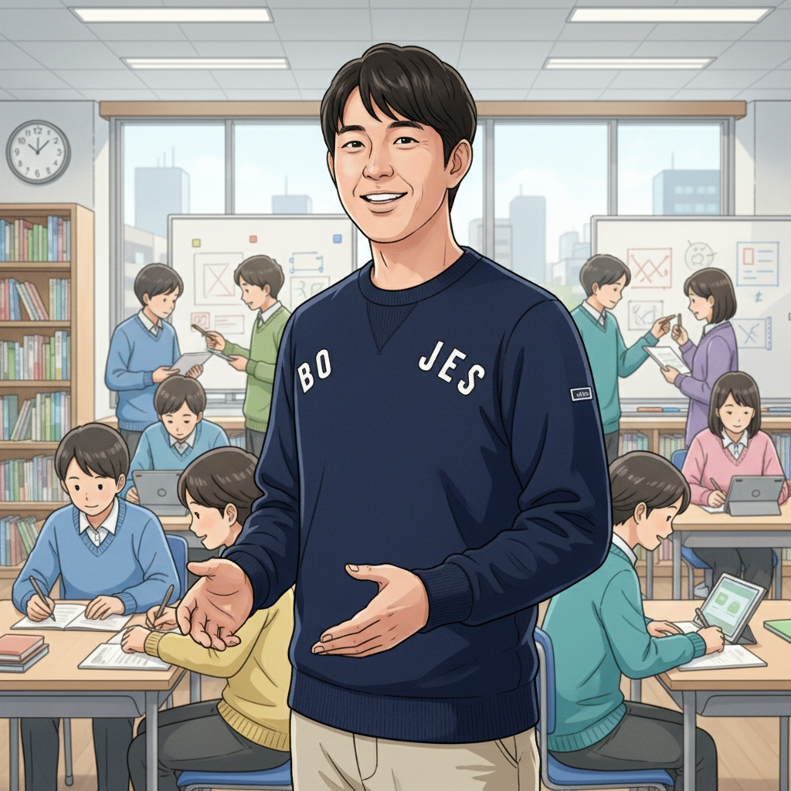

「好き」を仕事に！加賀屋結眞さんのマインクラフト起業ストーリー（加賀屋結眞）

皆さん、こんにちは！if塾ブログへようこそ。今回は、発達特性を持つ学生起業家、加賀屋結眞さんをご紹介します。加賀屋さんは、幼い頃からマインクラフトが大好き。その情熱を活かし、高校在学中にマインクラフトの建築代行サービスを提供する会社を設立。なんと、初年度から年商1000万円を突破したんです！
加賀屋さんは、集中力が高く、一度ハマると徹底的に追求する特性をお持ちです。その集中力と創造性を活かし、クライアントの要望以上のクオリティの建築物を作り上げ、多くの顧客から支持を得ています。
加賀屋さんは言います。「最初は不安もありましたが、自分の『好き』を信じて挑戦して本当に良かった。発達障害があるからこそ、人とは違う視点や発想が生まれるし、それが強みになるんだと実感しました。」
加賀屋さんの成功は、「好き」を仕事にすること、そして自身の特性を強みに変えることの大切さを教えてくれます。
ビジコンでの挑戦と学び、そしてif塾との出会い（高崎先生、山﨑塾長）
加賀屋さんの起業のきっかけは、高校のビジネスコンテストでした。そこで、if塾の高崎先生と出会い、メンターとしてサポートを受けることになります。
高崎先生：「加賀屋くんのプレゼンを聞いた時、その熱意と才能に圧倒されました。少しコミュニケーションに課題があると感じましたが、彼の持つ可能性を最大限に引き出すことが、私たちの使命だと感じました。」
if塾では、加賀屋さんの特性に合わせたビジネスプランの作成、プレゼンテーションスキル向上、そしてメンタル面のサポートを行いました。山﨑塾長は、加賀屋さんの強みである集中力と創造性を活かすための戦略を一緒に練り上げました。
山﨑塾長：「加賀屋くんは、非常に優れた才能を持っていますが、それを社会にどう活かしていくかが課題でした。if塾では、彼の才能を最大限に引き出し、社会で活躍できる人材を育成することを目標にしています。」
ビジコンでの経験とif塾のサポートを通じて、加賀屋さんは起業に必要な知識とスキルを習得し、自信を持ってスタートアップへと踏み出すことができました。
eスポーツで才能を開花！Y君の挑戦と可能性（山﨑塾長）
if塾では、起業支援だけでなく、eスポーツを通じた発達障害を持つ方の才能開花も支援しています。その一例が、プロeスポーツプレイヤーを目指すY君です。Y君は、注意欠陥・多動性障害（ADHD）の診断を受けていますが、ゲームに対する集中力と反射神経は抜群です。
山﨑塾長はY君の才能を見抜き、集中的なトレーニングプログラムを提供。Y君はメキメキと実力をつけ、現在ではプロチームへの入団を目指して日々練習に励んでいます。
山﨑塾長：「Y君のように、発達障害を持つ方の中には、特定の分野で非常に高い能力を発揮する方が多くいます。大切なのは、その才能を見つけ、伸ばすための適切な環境を提供することです。if塾では、一人ひとりの個性と才能に合わせた教育を提供し、社会で活躍できる人材を育成しています。」
Y君は、マインクラフト 教育にも興味があり、将来はゲームを通じて子供たちの教育に貢献したいと考えています。
あなたの「才能」を社会へ！if塾で未来を切り開こう！（山﨑塾長）

加賀屋さんの起業、Y君のeスポーツへの挑戦。これらは、発達特性を持つ方々の可能性を示すほんの一例です。if塾では、一人ひとりの個性と才能を尊重し、社会で活躍できる人材を育成するためのサポートを行っています。
「自分には何ができるんだろう？」
「得意なことを仕事にしたい！」
そう思っている方は、ぜひ一度if塾にご相談ください。経験豊富な講師陣が、あなたの才能を見つけ、伸ばすための最適なプランをご提案します。
今すぐif塾の無料体験にお申込みください！あなたの未来を一緒に切り開きましょう！
また、if塾ではマインクラフト 教育にも力を入れています。ゲームを通じて、創造性、問題解決能力、コミュニケーション能力を育むことができます。ぜひ、お気軽にお問い合わせください。